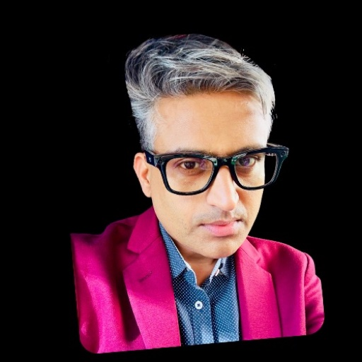

Serious research, without the gatekeeping
Great research tooling shouldn't require enterprise licences, accounts you don't want, or handing your unpublished work to someone else's server. ItsMyResearch puts a full research workbench — literature discovery, originality signals, methodology design, qualitative analysis, review simulation, and publication-ready formatting — into a plain browser tab: keyless where possible, bring-your-own-AI where useful, and private by architecture rather than by promise.
Co-Founders · Dr. Gen AI, GGU San Francisco

Dr. Nagesh Sharma
Co-Founder & CEONagesh works at the intersection of artificial intelligence, product innovation, and enterprise transformation as founder of ReWiseEd AI. His career spans technology leadership at Cisco, Honeywell, and Schneider Electric, alongside years of coaching organizations through agile and AI-driven change as a Professional Scrum Trainer and ICF coach. He completed his doctorate at Golden Gate University, San Francisco (2023–2026), with research focused on generative AI, and mentors founders and executives through ISB Executive Education and TiE Hyderabad.
Johann San Francisco
Co-Founder & CTOJohann is an AI and innovation leader who has spent his career turning emerging technology into working practice — most recently as Chief AI & Innovation Officer at Meinhardt, and through The Research School, where he helps researchers and organizations build real capability with AI. His doctoral work at Golden Gate University, San Francisco focuses on generative AI. At ReWiseEd he shapes the research experience: tools that are rigorous enough for scholars and simple enough for a first-year student.
Guiding the academic direction
Dr. Anuja Shukla
Strategic AdvisorDr. Anuja Shukla advises ItsMyResearch on academic strategy and research rigor — how the platform serves real researchers, from first-year students to doctoral candidates. An academic and researcher in technology adoption and digital consumer behaviour, she brings the scholar's eye to every tool we ship: methods that hold up in a viva, citations that hold up in review, and workflows that mirror how research is actually done.